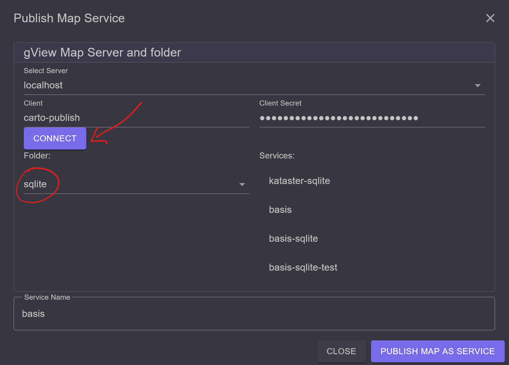
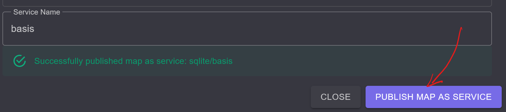

Publishing Maps as gView Server Service¶
Map projects created with gView Carto can be published on the gView MapServer. This allows these maps to be integrated into various GIS applications (Desktop, WebGIS, Leaflet, …).
The map services are provided through the gView MapServer via different interfaces, for example:
OGC WMS: A widely used interface that can be integrated into all common GIS software packages. It allows for the generation of map images and legends, and simple feature queries can be performed (Point Identify).
OGC WMTS: Provision of pre-processed tile tiles.
GeoServices REST: An interface defined by ESRI based on REST/Json. This allows for the retrieval of map and legend images and supports more complex queries (point, rectangle, arbitrary geometry) and searches by attributes. In addition to map services (MapServer), feature services (FeatureServer) are also offered, allowing geo-objects to not only be retrieved/queried but also edited and created (Editing).
There are three ways to publish map services:
Command Line: The command line approach is described in the section (gView.Cmd MxlUtil).
MapServer WebUI: Through the web interface of the gView.Server.
Carto: Through the gView.Carto app.
Publishing via the MapServer WebUI¶
The procedure described here takes place through the web interface of the server. After calling up the server, the following interface will be displayed:

To publish map services, one must log in either as an administrator or as an authorized
Client to the server. To log in as an administrator, click on the Manage tile.
Then you must log in using the login form.
As a Client, you can log in via the Sidebar (left) using Login. Clients have specific
rights to services and directories with services (MapRequest, Query, Edit, Publish).
Clients, however, are not allowed to create directories themselves. Only administrators are permitted to do this.
Since a client is necessary for publishing services via command line or gView.Carto, here is a brief demonstration of how to create clients.
Create Client¶
Click on Security in the administration area:

In this interface, a new client can be created:

The next step should be to create a directory where the new client can publish maps.
For this, switch first via the Sidebar to Browse Services.
In this view, a new directory can be created under Create Folder. After clicking
on Create new folder, the new directory should appear in the list.

Then switch back to the Manage area. There too, the new directory should now
appear with an open lock. Open here means that every user has all rights (except publish)
to this directory (not recommended for production systems).
Clicking on the lock opens a window. Here, the user created earlier can be found in the selection list.
At least the publish right should be granted for this user.
For the anonymous user _anonymous, for example, only the map and query rights
can be granted:
The next steps can be carried out with the already logged-in Administrator user.
However, one could now log out and then log in via the Sidebar with
Login as Client publish-test.
Publish Services¶
To publish services, switch to the Browse Services area (Sidebar). Here,
you must also switch to the desired directory. If you are authorized to publish services with the logged-in user,
the Publish button will appear. There, an MXL file (map project) can be selected:
Under Service Name, the name of the service can be specified (if it does not automatically match
the name of the MXL file). Clicking on the Publish Service button,
the service will be attempted to be published. During publishing, it is checked whether all data sources
are accessible from the server and whether all used Fonts are installed. If the publishing is
successful, the service will appear in the list. If a service with this name already exists,
it will automatically be replaced.
Publishing via gView.Carto¶
Maps can also be published directly from the gView.Carto app. This has the advantage that you do not have to switch to the gView.Server web interface. However, some prerequisites are necessary:
gview-webapps.config: In the file _config/gview-webapps.config, the section Publish must be defined (see Configuration of gView.WebApps). This section lists the Servers and Clients that can be accessed for publishing via the gView.Carto app.
Publish Client: As already described above, a Client is needed to publish services (except when publishing via the Server WebUI, where one can publish directly using the administrator account). A Client can only publish services in one Folder. As described above, a Client, e.g., carto-publish, with a Secret must be created by the administrator. Then, as also described above, Folders must be created and the publish right assigned to the Client carto-publish.
Once all prerequisites are met, the following tool is available in the gView.Carto app:

Note
This tool is only visible to admin users.
When you click on the button, the following dialog opens:

Here, you can select from different gView.Server instances via Select Servers. If a Client and Client Secret have not already been defined in the configuration for an instance, the necessary Credentials must be entered here. When you click on Connect, a connection to the server is established, and the Folders where publishing is possible are listed:
If there are already Services in this Folder, they will also be listed. If you click on one of these Services, the name will be entered in the Service Name input field.
Note
If you publish a map with the name of an existing Service, the service on the gView.Server will be overwritten.
If you want to publish a new service, a name can be entered in Service Name. Only lowercase letters, digits, -, and _ should be used here!
With the Publish map as service button, the map is published. If the publishing is successful, it will be displayed in the dialog:
If errors occur, they must be corrected so that the map can be published. Errors may include:
Data Sources: The gView.Server instance does not have access to the data sources in the map.
Fonts: Fonts in the map (Labels, TrueTypeMarker) are not installed on the server where the gView.Server is running.